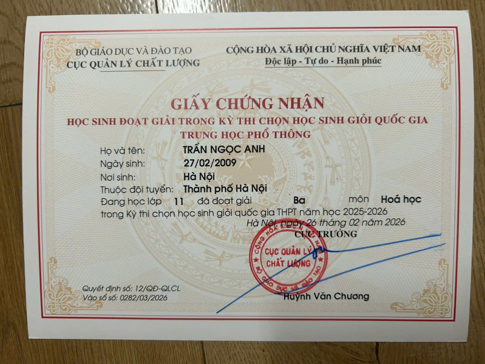
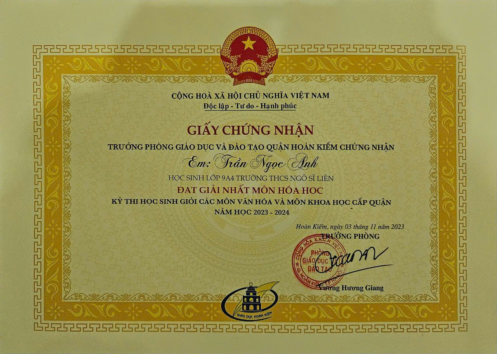
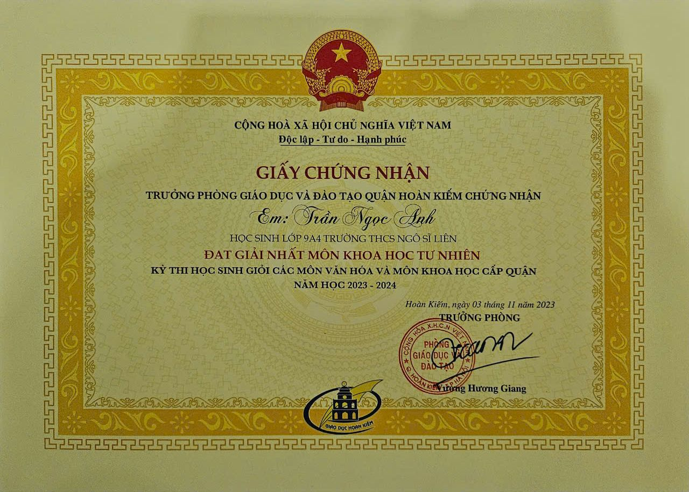

Giới thiệu
Mình là Trần Ngọc Anh, học sinh lớp 11 Hóa 1, trường THPT chuyên Hà Nội – Amsterdam. Mình đạt Giải Ba kỳ thi chọn Học sinh giỏi Quốc gia môn Hóa học năm học 2025–2026 khi đang học lớp 11, cùng Giải Nhì HSG Thành phố lớp 12 và hai Giải Nhất cấp quận thời THCS. Mình đạt SAT 1520/1600 (Math 790). Ngoài Hóa học, mình chơi piano (giải Bạc cuộc thi âm nhạc quốc tế ZhongSin 2024) và tích cực tham gia hoạt động cộng đồng như thăm và tặng quà trẻ khuyết tật tại Làng Hòa Bình Thanh Xuân.
“Hóa học và âm nhạc giống nhau ở một điểm: mọi thứ đều phải hài hòa.”
Kỹ năng
Sở thích & Quan tâm
Định hướng tương lai
Mình đặt mục tiêu vào đội tuyển thi HSG Quốc gia năm lớp 12 với thành tích cao hơn, và theo đuổi ngành Hóa học hoặc Y – Dược ở bậc đại học. Piano vẫn sẽ là người bạn đồng hành giúp mình cân bằng giữa học tập và cuộc sống.
Hành trình
Giải Nhất môn Hóa học và giải Nhất môn Khoa học Tự nhiên kỳ thi HSG Quận Hoàn Kiếm (lớp 9, THCS Ngô Sĩ Liên).
Outstanding Silver Award – Piano V (Amateur) tại 19th ZhongSin International Music Competition; trúng tuyển lớp chuyên Hóa, THPT chuyên Hà Nội – Amsterdam.
Giải Nhì kỳ thi HSG Thành phố lớp 12 môn Hóa học khi đang học lớp 11 (10/2025); tham gia dự án Advisor – Advisee của Ams Advisor.
Giải Ba kỳ thi chọn HSG Quốc gia môn Hóa học (02/2026); thăm và tặng quà trẻ khuyết tật tại Làng Hòa Bình Thanh Xuân; SAT 1520/1600 (06/2026).
Nghiên cứu khoa học
Thành tích & Giải thưởng
Giải Ba kỳ thi chọn Học sinh giỏi Quốc gia THPT môn Hóa học (2025–2026)
{kind=link}

Giải Nhì kỳ thi chọn HSG Thành phố các môn văn hóa lớp 12 – môn Hóa học (2025–2026)

Giải Nhất môn Hóa học – kỳ thi HSG cấp quận (2023–2024)
{kind=link}

Giải Nhất môn Khoa học Tự nhiên – kỳ thi HSG cấp quận (2023–2024)
{kind=link}

Outstanding Silver Award – Piano V (Amateur) – 19th ZhongSin International Music Competition, Vietnam Regional Round 2024
Chứng chỉ chuẩn hóa
SAT 1520/1600
Reading & Writing 730 · Math 790 · Kỳ thi 06/06/2026 (lớp 11)

Hoạt động ngoại khóa & Dự án
Thiện nguyện tại Làng Hòa Bình Thanh Xuân (2026)
Thăm hỏi và trao quà cho trẻ khuyết tật đang điều trị, phục hồi chức năng tại Làng Hòa Bình Thanh Xuân, Hà Nội. Được Làng gửi Thư cảm ơn ghi nhận tấm lòng nhân ái.

Dự án “Advisor – Advisee” – Ams Advisor
Tham gia đóng góp cho dự án Advisor – Advisee do Ams Advisor tổ chức, hỗ trợ kết nối và định hướng cho học sinh trường THPT chuyên Hà Nội – Amsterdam.
{kind=link}
Piano – 19th ZhongSin International Music Competition (2024)
Outstanding Silver Award hạng mục Piano V – Amateur Level, vòng khu vực Việt Nam.
{kind=link}